Count outcomes: a disconnected COPD exacerbation network
Source:vignettes/count-outcomes.Rmd
count-outcomes.RmdThis vignette is a complete worked example for a
count endpoint with an exposure
offset: exacerbation rates, in a treatment network
that is disconnected and whose trials enrolled
different patients. As in
vignette("binary-outcomes") we run both routes, the
frequentist two-stage route (cstc() / cmaic()
into cnma_bridge()) and the one-stage Bayesian route
(cmlnmr()); but three things are new here and they are the
reason to read this one as well:
- the log link with an offset, so the estimand is a rate ratio;
- two effect modifiers, one continuous and one binary, which turns out to make the aggregate-only components harder, not easier, to identify;
- the rate ratio is collapsible, unlike the odds
ratio, so
cstc()andcmaic()target nearly the same estimand here, where on the odds-ratio scale they do not.
The data here are entirely simulated. The clinical setting (maintenance inhaler therapy in COPD) supplies only the vocabulary, because inhaled regimens are genuinely multi-component: bronchodilators and steroids are combined in one device. No number below is taken from any trial or publication. We set the true parameter values ourselves, which is exactly what lets us check whether each method recovers them.
The clinical question
Write PBO for placebo (the inactive comparator) and use
four active components:
-
LABA: a long-acting beta-agonist, -
LAMA: a long-acting muscarinic antagonist, -
ICS: an inhaled corticosteroid, -
ROF: roflumilast, an oral add-on.
The outcome is the number of moderate-to-severe exacerbations a patient has during follow-up. Follow-up length differs between patients (people drop out), so the outcome is a count per person-year: a rate. Lower is better, so a rate ratio below 1 favors the active arm.
The trials split into two groups that share no treatment:
-
Sub-network 1, older placebo-controlled monotherapy
trials:
PBOvsLABA(three times),PBOvsLAMA(once). -
Sub-network 2, newer trials on a
LABAbackbone:LABA+ICSvsLABA+LAMA(twice), andLABA+LAMAvsLABA+LAMA+ROF(once).
No trial links the two groups. A formulary committee nevertheless has
to ask: how does the ICS-containing dual inhaler
(LABA+ICS) compare with LAMA
monotherapy? That contrast crosses the gap.
The two groups also enrolled different patients, on two axes that matter:
-
eos: the blood eosinophil count, coded as(cells per microliter - 200) / 100, soeos = 0is 200 cells andeos = 1.5is 350 cells. It is continuous, and it modifies the steroid effect. -
freqex: a frequent exacerbator indicator (two or more exacerbations in the year before enrolment). It is binary, it is strongly prognostic, and it modifies theLAMAeffect.
A binary covariate and a continuous one need different integration
margins, and cpaic picks them automatically: a 0/1 covariate gets a
Bernoulli margin, so that integration points land on
{0, 1} and not somewhere in between, and anything else gets
a normal margin. Integrating a binary covariate as
though it were normal would average the model over patients who cannot
exist.
The model
cmlnmr() fits an individual-level Poisson regression
with a log link and a log-exposure offset to every
patient, whether that patient’s data arrive as IPD or are integrated out
of an aggregate arm:
where
is patient
’s
person-time,
indexes the study,
the treatment, and
says which components treatment
contains. The offset has coefficient fixed at 1, which is what turns a
model for counts into a model for rates.
The relative effect is again population-specific,
now a log rate ratio
rather than a log odds ratio. There is no population-free answer, so
relative_effects() requires newdata.
The log link is nonlinear, so you cannot plug in the mean
An aggregate arm reports a total event count and total person-time,
plus the mean of each covariate. It is tempting to evaluate the
model at that mean. It is also wrong. By Jensen’s inequality,
and for a convex function the plug-in
understates the average rate. The gap is the classic
aggregation bias of study-level meta-regression (Berlin et al.
2002). cmlnmr() therefore does not plug in: it
evaluates the individual model at quasi-Monte-Carlo points drawn from
each study’s own covariate distribution (coupled by a Gaussian copula
whose correlation is estimated within the IPD studies) and
averages the rate, on its natural scale, before
comparing it with the observed count (Phillippo et
al. 2020).
The rate ratio is collapsible, and the odds ratio is not
This is the sharpest contrast with
vignette("binary-outcomes"). Under a log link with no
treatment-by-covariate interaction, the population-average (marginal)
rate ratio equals the individual (conditional) one:
The rate ratio is
collapsible; the odds ratio is not (Greenland et al.
1999). So the estimand gap between cstc()
(conditional) and cmaic() (marginal) that we saw on the
odds-ratio scale largely closes here (Remiro-Azócar et al. 2022). What
survives is a second-order Jensen term whenever
,
because then the two arms’ rates are averaged over the covariate
distribution with different exponents. The two methods should agree
closely, and disagree a little, and both statements are informative.
Setting up the data
We set the truth ourselves. The component effects
beta_true are log rate ratios at the covariate origin, and
Gamma_true is a components-by-modifiers matrix: the steroid
works much better in eosinophilic patients, and LAMA works
much better in frequent exacerbators.
treatments <- c("PBO", "LABA", "LAMA", "LABA+ICS", "LABA+LAMA", "LABA+LAMA+ROF")
Cmat <- build_C_matrix(treatments, inactive = "PBO")
Cmat
#> ICS LABA LAMA ROF
#> PBO 0 0 0 0
#> LABA 0 1 0 0
#> LAMA 0 0 1 0
#> LABA+ICS 1 1 0 0
#> LABA+LAMA 0 1 1 0
#> LABA+LAMA+ROF 0 1 1 1
beta_true <- c(ICS = -0.25, LABA = -0.15, LAMA = -0.22, ROF = -0.12)
Gamma_true <- rbind( # rows: components; columns: modifiers
ICS = c(eos = -0.18, freqex = -0.10), # steroid: much better if eosinophilic
LABA = c(eos = 0.02, freqex = -0.02),
LAMA = c(eos = 0.01, freqex = -0.20), # LAMA: much better if a frequent exacerbator
ROF = c(eos = 0.00, freqex = -0.05))
b_prog <- c(eos = 0.05, freqex = 0.55) # frequent exacerbators exacerbate more, whatever the arm
# theta_t(x) = C_t' (beta + Gamma x): the TRUE conditional log rate ratio vs PBO.
theta <- function(trt, x) {
ct <- Cmat[trt, ]
comps <- names(ct)
sum(ct * beta_true[comps]) + sum(ct * (Gamma_true[comps, , drop = FALSE] %*% x))
}
knitr::kable(Gamma_true, caption = "Gamma: component x effect-modifier interactions (the truth)")| eos | freqex | |
|---|---|---|
| ICS | -0.18 | -0.10 |
| LABA | 0.02 | -0.02 |
| LAMA | 0.01 | -0.20 |
| ROF | 0.00 | -0.05 |
The headline contrast, LABA+ICS versus
LAMA, has component vector
,
so its true value is exactly
which is a rate ratio near 1 in a
low-eosinophil population and around 0.68 in a high-eosinophil one. One
number cannot serve both.
Seven trials. Two are ours (IPD); five are published (aggregate only).
design <- data.frame(
study = c("MONO-1", "MONO-2", "MONO-3", "MONO-4", "ADD-1", "ADD-2", "ADD-3"),
arm1 = c("PBO", "PBO", "PBO", "PBO",
"LABA+ICS", "LABA+LAMA", "LABA+ICS"),
arm2 = c("LABA", "LAMA", "LABA", "LABA",
"LABA+LAMA", "LABA+LAMA+ROF", "LABA+LAMA"),
n = c(600, 600, 400, 350, 600, 550, 450), # per arm
mu = c(0.10, 0.05, 0.15, 0.12, 0.20, 0.25, 0.18),
eos_m = c(0.2, -0.3, 0.0, 0.4, 0.8, 1.0, 0.6), # covariate means
eos_s = c(1.0, 0.9, 1.0, 1.0, 1.1, 1.0, 1.0),
fx_p = c(0.35, 0.30, 0.40, 0.45, 0.55, 0.65, 0.50),
ipd = c(TRUE, FALSE, FALSE, FALSE, TRUE, FALSE, FALSE),
stringsAsFactors = FALSE
)
knitr::kable(design, caption = "Trial design. MONO-* are older; ADD-* newer.")| study | arm1 | arm2 | n | mu | eos_m | eos_s | fx_p | ipd |
|---|---|---|---|---|---|---|---|---|
| MONO-1 | PBO | LABA | 600 | 0.10 | 0.2 | 1.0 | 0.35 | TRUE |
| MONO-2 | PBO | LAMA | 600 | 0.05 | -0.3 | 0.9 | 0.30 | FALSE |
| MONO-3 | PBO | LABA | 400 | 0.15 | 0.0 | 1.0 | 0.40 | FALSE |
| MONO-4 | PBO | LABA | 350 | 0.12 | 0.4 | 1.0 | 0.45 | FALSE |
| ADD-1 | LABA+ICS | LABA+LAMA | 600 | 0.20 | 0.8 | 1.1 | 0.55 | TRUE |
| ADD-2 | LABA+LAMA | LABA+LAMA+ROF | 550 | 0.25 | 1.0 | 1.0 | 0.65 | FALSE |
| ADD-3 | LABA+ICS | LABA+LAMA | 450 | 0.18 | 0.6 | 1.0 | 0.50 | FALSE |
Note which edges are aggregate-only, because it will matter later:
LAMA versus PBO is measured by exactly
one trial (MONO-2, aggregate), and roflumilast by exactly
one (ADD-2, aggregate).
gen_arm <- function(study, trt, n, mu, em, es, fp) {
freqex <- rbinom(n, 1, fp)
# eosinophils and exacerbation history are correlated within a trial
eos <- rnorm(n, em + 0.25 * (freqex - fp), es)
expo <- pmin(rexp(n, rate = 0.25), 1) # person-years, censored at 1
x <- cbind(eos, freqex)
lograte <- mu + as.vector(x %*% b_prog) +
vapply(seq_len(n), function(i) theta(trt, x[i, ]), numeric(1))
data.frame(.study = study, .trt = trt,
.y = rpois(n, expo * exp(lograte)), .exposure = expo,
eos = eos, freqex = freqex, stringsAsFactors = FALSE)
}
patients <- do.call(rbind, lapply(seq_len(nrow(design)), function(i) {
d <- design[i, ]
rbind(gen_arm(d$study, d$arm1, d$n, d$mu, d$eos_m, d$eos_s, d$fx_p),
gen_arm(d$study, d$arm2, d$n, d$mu, d$eos_m, d$eos_s, d$fx_p))
}))
is_ipd <- patients$.study %in% design$study[design$ipd]The two routes want different data shapes. cmlnmr()
takes patient rows (with an .exposure column) plus
arm-level aggregate rows: total events r,
total person-time E, and each modifier’s summary. The
continuous modifier needs a _mean and an _sd;
the binary one needs only a _mean, which is its
prevalence, because a Bernoulli’s mean determines its variance.
ipd <- patients[is_ipd, ]
agd <- do.call(rbind, lapply(
split(patients[!is_ipd, ], ~ .study + .trt, drop = TRUE),
function(d) data.frame(
.study = d$.study[1], .trt = d$.trt[1],
r = sum(d$.y), E = sum(d$.exposure),
eos_mean = mean(d$eos), eos_sd = sd(d$eos),
freqex_mean = mean(d$freqex), stringsAsFactors = FALSE)))
agd <- agd[order(agd$.study, agd$.trt), ]
rownames(agd) <- NULL
knitr::kable(agd, digits = 3, caption = "Aggregate arms: events, person-time, covariate summaries")| .study | .trt | r | E | eos_mean | eos_sd | freqex_mean |
|---|---|---|---|---|---|---|
| ADD-2 | LABA+LAMA | 576 | 495.260 | 1.008 | 0.944 | 0.667 |
| ADD-2 | LABA+LAMA+ROF | 525 | 489.079 | 0.988 | 1.023 | 0.645 |
| ADD-3 | LABA+ICS | 443 | 402.532 | 0.561 | 0.973 | 0.507 |
| ADD-3 | LABA+LAMA | 421 | 401.098 | 0.649 | 1.016 | 0.507 |
| MONO-2 | LAMA | 501 | 524.945 | -0.260 | 0.886 | 0.288 |
| MONO-2 | PBO | 640 | 530.543 | -0.319 | 0.921 | 0.293 |
| MONO-3 | LABA | 466 | 361.710 | 0.005 | 1.012 | 0.408 |
| MONO-3 | PBO | 524 | 353.593 | 0.127 | 0.999 | 0.402 |
| MONO-4 | LABA | 404 | 308.161 | 0.428 | 1.026 | 0.491 |
| MONO-4 | PBO | 435 | 302.285 | 0.349 | 0.995 | 0.463 |
cpaic_network() takes contrast-level
aggregate data, one row per comparison, on the log-rate scale
(sm = "IRR"). The two IPD studies appear here too, with
their unadjusted contrasts, which cstc() and
cmaic() will replace:
contrast_of <- function(d, a1, a2) {
cell <- function(a) {
s <- d[d$.trt == a, ]; c(r = sum(s$.y), E = sum(s$.exposure))
}
x2 <- cell(a2); x1 <- cell(a1)
data.frame(
studlab = d$.study[1], treat1 = a2, treat2 = a1,
TE = unname(log(x2["r"] / x2["E"]) - log(x1["r"] / x1["E"])),
seTE = unname(sqrt(1 / x2["r"] + 1 / x1["r"])),
stringsAsFactors = FALSE)
}
agd_contr <- do.call(rbind, lapply(seq_len(nrow(design)), function(i) {
d <- design[i, ]
contrast_of(patients[patients$.study == d$study, ], d$arm1, d$arm2)
}))
knitr::kable(agd_contr, digits = 3, caption = "Unadjusted log rate ratios")| studlab | treat1 | treat2 | TE | seTE |
|---|---|---|---|---|
| MONO-1 | LABA | PBO | -0.179 | 0.054 |
| MONO-2 | LAMA | PBO | -0.234 | 0.060 |
| MONO-3 | LABA | PBO | -0.140 | 0.064 |
| MONO-4 | LABA | PBO | -0.093 | 0.069 |
| ADD-1 | LABA+LAMA | LABA+ICS | 0.086 | 0.060 |
| ADD-2 | LABA+LAMA+ROF | LABA+LAMA | -0.080 | 0.060 |
| ADD-3 | LABA+LAMA | LABA+ICS | -0.047 | 0.068 |
net <- cpaic_network(agd_contr, ipd = ipd, sm = "IRR", family = "poisson",
inactive = "PBO", ipd_covariates = c("eos", "freqex"),
ipd_exposure = ".exposure")
cpaic_connectivity(net)
#> cpaic connectivity
#> Connected network: FALSE
#> Sub-networks: 2
#> [1] 3 treatments
#> [2] 3 treatments
#> Bridging components: LABA, LAMA
#> Component design: rank(X) = 4 / 4 components -> all component effects identified
#> Estimable effects: 5 / 5 vs PBO
# plot() returns a ggplot object, so the usual verbs apply; here they move the
# four legends below the panel and give the treatment labels room to breathe.
plot(net) +
theme(legend.position = "bottom", legend.box = "vertical",
legend.margin = margin(0, 0, 0, 0),
legend.title = element_text(size = 8),
legend.text = element_text(size = 7)) +
scale_x_continuous(expand = expansion(mult = 0.22)) +
scale_y_continuous(expand = expansion(mult = 0.22))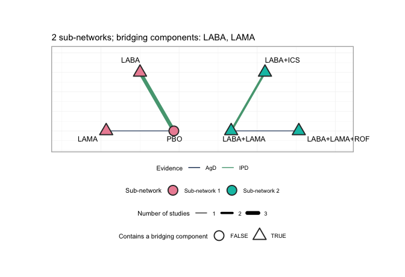
plot of chunk network-plot
plot() draws each sub-network on its own circle, so the
disconnection is visible rather than inferred: the MONO-*
trials sit around PBO on one circle, the ADD-*
trials on the other, and no edge runs between them. Edge color separates
the two IPD trials from the five aggregate ones, and node shape marks
the treatments that contain a bridging component. Every treatment except
PBO contains LABA or LAMA, which
is precisely why the additive model has anything to bridge with; a
network whose sub-networks shared no component could not be reconnected
at all, and plot() would say so in its subtitle.
Two sub-networks, bridged by LABA and LAMA,
and the component design matrix
has full column rank: an aggregate-data component NMA
would identify every component effect and every relative effect (Rücker et al. 2020;
Wigle et al. 2026). Hold that
thought.
Covariate balance
balance <- do.call(rbind, lapply(split(patients, patients$.study), function(d)
data.frame(Study = d$.study[1],
Eosinophils = 200 + 100 * mean(d$eos),
eos_mean = mean(d$eos), eos_sd = sd(d$eos),
freqex = mean(d$freqex),
Rate_per_year = sum(d$.y) / sum(d$.exposure))))
knitr::kable(balance, digits = 2, row.names = FALSE,
caption = "Effect-modifier balance across the seven trials")| Study | Eosinophils | eos_mean | eos_sd | freqex | Rate_per_year |
|---|---|---|---|---|---|
| ADD-1 | 280.29 | 0.80 | 1.10 | 0.55 | 1.04 |
| ADD-2 | 299.80 | 1.00 | 0.98 | 0.66 | 1.12 |
| ADD-3 | 260.53 | 0.61 | 0.99 | 0.51 | 1.08 |
| MONO-1 | 220.10 | 0.20 | 1.01 | 0.33 | 1.32 |
| MONO-2 | 171.03 | -0.29 | 0.90 | 0.29 | 1.08 |
| MONO-3 | 206.57 | 0.07 | 1.01 | 0.41 | 1.38 |
| MONO-4 | 238.85 | 0.39 | 1.01 | 0.48 | 1.37 |
The older MONO-* trials enrolled patients around 170-240
eosinophils, of whom roughly a third were frequent exacerbators. The
newer ADD-* trials enrolled patients around 260-300
eosinophils, of whom more than half were. The two sub-networks are not
comparing the same people, and both covariates move together, which is
why the integration uses a copula rather than treating them as
independent.
We must name a target population. Take the patients a formulary committee is actually deciding for: an eosinophilic, frequently exacerbating group (350 cells, 55% frequent exacerbators). We will also ask for a low-eosinophil, infrequently exacerbating population, where the answer is quite different.
target <- data.frame(eos = 1.5, freqex = 0.55) # 350 cells, 55% frequent
target_low <- data.frame(eos = -0.5, freqex = 0.20) # 150 cells, 20% frequentFitting
Route 1: two stages, frequentist
cstc() regresses the count on treatment, the covariate
main effects, and treatment-by-modifier interactions, with a
log(exposure) offset and the modifiers centered at the
target; its treatment coefficient is then the population-adjusted
conditional log rate ratio in the target population.
cmaic() reweights each IPD trial so its modifier
distribution matches the target (Signorovitch et al. 2010) and
refits a weighted Poisson model with the same offset, giving a
marginal log rate ratio. Both hand their adjusted
contrasts to cnma_bridge().
ems <- c("eos", "freqex")
fit_stc <- cstc(net, target = c(eos = 1.5, freqex = 0.55), effect_modifiers = ems)
fit_maic <- cmaic(net, target = c(eos = 1.5, freqex = 0.55),
target_sd = c(eos = 1.0), # only the continuous one needs an SD
effect_modifiers = ems, n_boot = 200, seed = 9)
effective_sample_size(fit_maic)
#> MONO-1 ADD-1
#> 236.6135 823.9037target_sd names only eos. A Bernoulli
variable’s mean fixes its variance, so matching freqex’s
prevalence already matches its second moment; there is nothing extra to
ask for.
Matching costs information, and the effective sample sizes show how
much. MONO-1 is the trial furthest from the target on both
covariates, and it pays heavily: most of its patients receive very
little weight, because the target population barely resembles them. That
number is a warning, not a diagnostic to be optimized away; a small ESS
means the adjusted contrast rests on a handful of patients (Phillippo et al.
2018).
An effective sample size says that the weights are well behaved. It
does not say that the reweighted edge carries the contrast you care
about, and if it does not, then adjusting that edge cannot move the
answer however healthy its ESS looks. plot_edge_influence()
asks the second question directly: it decomposes the bridged estimate of
one contrast into the weight each observed edge receives.
plot_edge_influence(fit_stc, treatment = "LABA+ICS", comparator = "LAMA")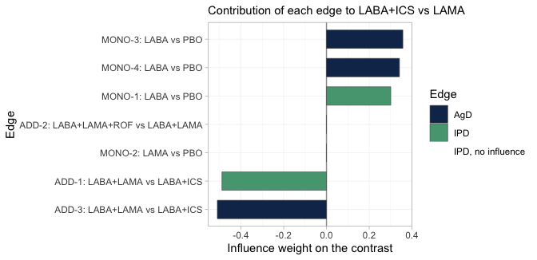
plot of chunk edge-influence
Both IPD edges carry weight, so the population adjustment done to
them is not wasted. The reason is worth spelling out, because it is the
whole logic of the bridge: LABA+ICS versus
LAMA decomposes into the LABA direction, which
MONO-1, MONO-3 and MONO-4
measure, plus the LAMA minus ICS direction,
which ADD-1 and ADD-3 measure.
MONO-1 and ADD-1 are the IPD trials, and they
sit one in each of those directions.
Two edges get nothing. ADD-2 is the easy case: the
headline contrast contains no ROF component, so the
roflumilast trial is irrelevant to it. MONO-2 is the
instructive one. It measures LAMA against PBO,
so its edge points along LAMA alone, and that is
not one of the two directions the contrast decomposes into; the bridge
therefore takes nothing from it, despite its being the only trial in the
network that studied LAMA on its own. Had either of those
zero-weight edges been an IPD trial, it would have been drawn in red:
reweighting an edge of no influence cannot change the answer, whatever
its effective sample size reports.
The two-stage answer, as a forest plot, with LAMA as the
comparator throughout:
forest(fit_stc, reference = "LAMA")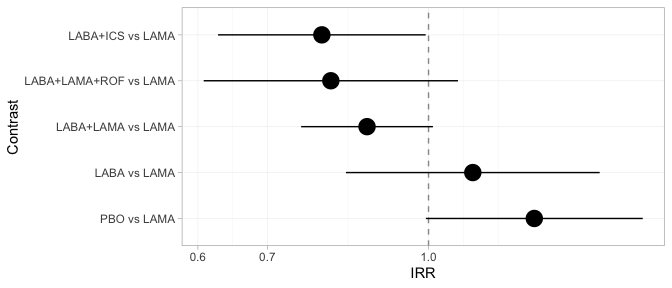
plot of chunk forest-freq
The bridge estimates all five contrasts against LAMA and
flags none of them. That is not an oversight: the component design
matrix has full column rank, so from the bridge’s point of view every
relative effect is identified. Keep this figure in mind. The Bayesian
forest in the Results section, fitted to the same seven trials, declines
to report three of these five rows.
Two routes, two estimands
The two methods target different things, and we can check that directly. The adjusted contrast each hands to the bridge is stored on the fitted object, so we can line it up against the estimand it is supposed to be hitting: the true conditional log rate ratio in closed form, and the true marginal one by G-computation over the target population.
edge <- function(fitobj, study) {
a <- fitobj$bridge$network$agd
a$TE[a$studlab == study]
}
mu_of <- function(s) design$mu[design$study == s]
# true MARGINAL log rate ratio in the target population, by G-computation
mc_marginal <- function(mu, t1, t2, M = 3e5) {
fx <- rbinom(M, 1, 0.55)
x <- cbind(eos = rnorm(M, 1.5, 1.0), freqex = fx)
rate <- function(t) mean(exp(mu + as.vector(x %*% b_prog) +
vapply(seq_len(M), function(i) theta(t, x[i, ]), numeric(1))))
log(rate(t1)) - log(rate(t2))
}
x_tgt <- c(eos = 1.5, freqex = 0.55)
truth <- function(t1, t2, x) theta(t1, x) - theta(t2, x)
knitr::kable(data.frame(
Edge = c("MONO-1: LABA vs PBO", "ADD-1: LABA+LAMA vs LABA+ICS"),
true_conditional = c(truth("LABA", "PBO", x_tgt),
truth("LABA+LAMA", "LABA+ICS", x_tgt)),
cSTC = c(edge(fit_stc, "MONO-1"), edge(fit_stc, "ADD-1")),
true_marginal = c(mc_marginal(mu_of("MONO-1"), "LABA", "PBO"),
mc_marginal(mu_of("ADD-1"), "LABA+LAMA", "LABA+ICS")),
cMAIC = c(edge(fit_maic, "MONO-1"), edge(fit_maic, "ADD-1"))),
digits = 3, row.names = FALSE,
caption = "Adjusted log rate ratios handed to the bridge, against the estimand each targets")| Edge | true_conditional | cSTC | true_marginal | cMAIC |
|---|---|---|---|---|
| MONO-1: LABA vs PBO | -0.131 | -0.181 | -0.132 | -0.274 |
| ADD-1: LABA+LAMA vs LABA+ICS | 0.260 | 0.254 | 0.249 | 0.203 |
Compare the true_conditional and
true_marginal columns. They are almost the same
number: on the MONO-1 edge they agree to three
decimal places. That is collapsibility: on the rate-ratio scale,
marginalizing over a covariate does not move the effect, and what little
movement survives is the second-order Jensen term that exists only
because
.
Run the identical comparison on the odds-ratio scale
(vignette("binary-outcomes")) and the two truths separate
by about 10%. Same two functions, same network shape, different link:
the estimand gap opens or closes according to the link, and nothing
else.
So on a collapsible measure the
cstc()-versus-cmaic() choice is not a choice
of estimand, and you may pick on variance grounds instead. That is worth
doing, and this table shows why: cmaic() is visibly the
noisier of the two on the MONO-1 edge. Its effective sample
size there collapsed to a few hundred of the 1200 patients, because
MONO-1 is the trial furthest from the target, and the
estimate pays for it. Regression adjustment uses every patient and is
usually the more efficient. On a non-collapsible measure you do
not get this luxury: there the choice is a choice of estimand, and it
has to be made deliberately (Remiro-Azócar et al. 2022).
Route 2: one stage, Bayesian
fit <- cmlnmr(ipd, agd,
effect_modifiers = ems,
inactive = "PBO", family = "poisson",
exposure = ".exposure",
trt_effects = "random",
chains = 4, iter_warmup = 500, iter_sampling = 500,
n_int = 64, seed = 3, show_exceptions = FALSE)
fit
#> cpaic: component-additive ML-NMR (Bayesian, poisson)
#> Treatment effects: random (noncentered)
#> Effect modifiers: eos [normal], freqex [bernoulli]
#> Component effects below are at the covariate origin (x = 0).
#> For a target population use relative_effects(fit, newdata = ...).
#>
#> component estimate se lower upper
#> ICS -0.126 0.178 -0.450 0.192
#> LABA -0.133 0.099 -0.319 0.046
#> LAMA -0.122 0.148 -0.368 0.184
#> ROF -0.387 1.061 -2.848 1.181The [bernoulli] and [normal] tags in the
print output are the integration margins cpaic chose. It guessed them
from the IPD (freqex is 0/1, eos is not);
margins = c(freqex = "bernoulli", eos = "normal") would set
them explicitly.
Priors
knitr::kable(do.call(rbind, lapply(names(fit$priors), function(p) {
s <- fit$priors[[p]]
data.frame(parameter = p, distribution = s$distribution,
location = s$location, scale = s$scale)
})), caption = "The complete prior specification, as passed to Stan")| parameter | distribution | location | scale |
|---|---|---|---|
| intercept | normal | 0 | 2.5 |
| beta | normal | 0 | 2.5 |
| regression | normal | 0 | 1.0 |
| gamma | normal | 0 | 1.0 |
| tau | half-normal | 0 | 1.0 |
The interaction prior, normal(0, 1), deserves a second look on this
scale. Exacerbation log rate ratios are small numbers: the component
main effects here are all between
and
.
A normal(0, 1) prior on an interaction is therefore very permissive
relative to the effects we are estimating, and it does real regularizing
work only where
is weakly identified. That is exactly where we will need
prior_sensitivity() below.
plot_prior_posterior() shows the same thing without a
refit, overlaying each parameter’s posterior (histogram) on the prior it
was given (red line). A posterior that reproduces its prior was not
estimated from the data.
plot_prior_posterior(fit)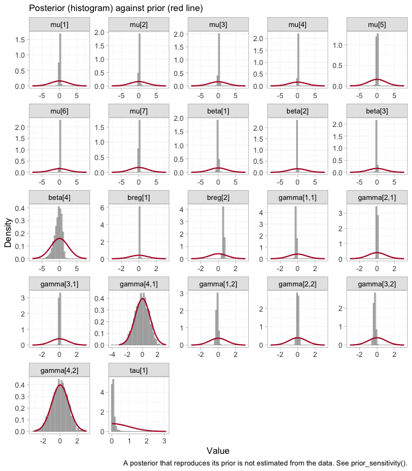
plot of chunk prior-posterior
The seven study intercepts mu and the two prognostic
coefficients breg are spikes against a broad prior: the
likelihood moved them, and hard. Three of the four component main
effects beta do the same. The interactions
gamma split into two groups, and the indexing is what makes
the panels readable: the first index runs over the components in the
order ICS, LABA, LAMA,
ROF, the second over the modifiers eos and
freqex. Six of the eight interactions are pulled well
inside their prior. The two that are not, gamma[4,1] and
gamma[4,2], sit squarely on top of the red curve, and the
one beta that barely moved is beta[4]. All
three belong to roflumilast. We return to them under prior sensitivity,
and they will turn up again, uninvited, in the integration diagnostics
below.
Convergence
data.frame(
divergences = fit$diagnostics$divergences,
max_treedepth = fit$diagnostics$max_treedepth,
max_rhat = round(fit$diagnostics$max_rhat, 4),
min_ess_bulk = round(min(fit$fit$summary(c("beta", "gamma", "mu",
"tau"))$ess_bulk, na.rm = TRUE))
)
#> divergences max_treedepth max_rhat min_ess_bulk
#> 1 4 1 1.0085 396No divergences, and
and the effective sample sizes are fine. A handful of iterations
saturate the maximum tree depth, which costs efficiency rather than
correctness; it is the signature of the mild funnel that any
random-effects model has when tau is only weakly informed.
Raising max_treedepth (passed through ... to
cmdstanr) removes it at the cost of runtime.
The same conclusion, drawn rather than tabulated. plot()
on a cmlnmr() fit hands the draws to
bayesplot; type = "trace" shows the four
chains for the component effects, the interactions, and the
heterogeneity.
plot(fit, type = "trace")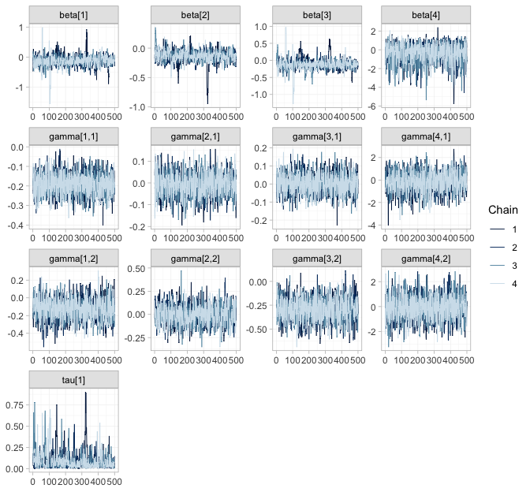
plot of chunk trace
plot(fit, type = "rhat")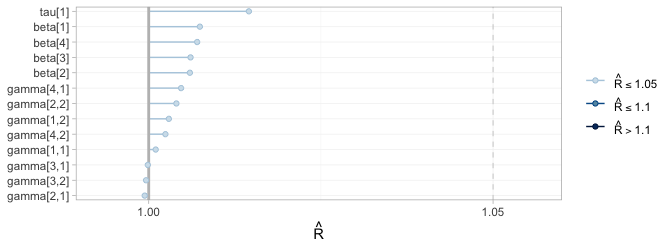
plot of chunk rhat
The chains overlay one another and sweep the whole support of each
parameter, with no drift and no chain exploring a region of its own;
every
sits in the lowest band. Now notice what these two figures
cannot tell you. Compare the gamma[4, ]
panels, which range across roughly plus or minus 3, with
gamma[2, ], which barely leave a tenth of that. The wide
pair belongs to roflumilast, whose interactions no trial in this network
identifies; the narrow pair belongs to LABA, which two IPD
arms pin down. Both mix beautifully. Sampling from a prior is easy, and
a sampler has no way of minding that it is doing so. Convergence
diagnostics certify that the posterior was explored; they say nothing
whatever about whether it was informed, and the rest of this vignette is
about the difference.
Integration accuracy
The aggregate likelihood is a quasi-Monte-Carlo integral, so it
carries a numerical error on top of the statistical one.
plot_integration_error() traces it: for each aggregate arm
it recomputes the integrated rate from the first
integration points, subtracts the value at all 64, and compares the
residual against the
envelope that quasi-Monte-Carlo integration is expected to follow.
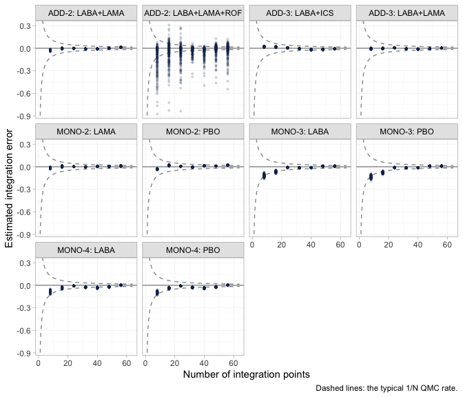
plot of chunk integration-error
Nine of the ten aggregate arms behave as they should: the error
collapses onto zero well inside the envelope, long before 64 points. The
tenth does not, and it is worth knowing which one. ADD-2’s
LABA+LAMA+ROF arm has an error an order of magnitude larger
than any other arm’s, still smeared across the envelope at the
right-hand edge.
More integration points would not fix it, because the spread is not
really across integration points: it is across posterior
draws. Roflumilast’s interactions are the ones no trial
identifies, and their posterior therefore runs over the whole prior, as
the prior-versus-posterior figure above already showed. A draw with a
large gamma[4, ] makes the integrand
vary enormously across the covariate distribution, and any Monte-Carlo
average of a wildly varying integrand converges slowly. The control is
sitting right beside it: ADD-2’s other
arm, LABA+LAMA, integrates perfectly cleanly. Same trial,
same patients, same covariate distribution, same 64 points. The only
difference between the two arms is the ROF component.
So the numerical diagnostic has independently fingered the same
component the estimability algebra refuses to report, and that is the
lesson worth carrying away: a badly behaved integration facet is
sometimes a symptom of a badly identified parameter rather than of too
few integration points. Nothing here contaminates the results, because
every contrast involving ROF is returned as NA
in any case. Had a facet misbehaved on an arm whose contrasts we
do report, the remedy would be to refit with a larger
n_int before reading the estimates.
Estimability: more effect modifiers, fewer estimable effects
Here is the count-specific twist, and it is not intuitive.
An aggregate two-arm trial contributes one number per contrast: it pins down at its own covariate mean , and no more. But the population-adjusted estimand has unknowns in the direction : one main effect and interactions. So an aggregate-only component needs independent aggregate equations to be identified at a general target.
With one effect modifier that is two equations. With two effect modifiers it is three. Adding a modifier to the model makes the aggregate-only components strictly harder to identify, even though it makes the model more nearly correct. An IPD trial escapes this, because within a trial you can regress on arm and on arm-by-covariate directly, and so recover all at once.
estimable_effects_at(fit, newdata = target, reference = "LAMA")
#> Estimability of the population-adjusted relative effects
#> Target population: eos = 1.5, freqex = 0.55
#> treatment comparator estimable identified_by basis
#> LABA LAMA FALSE none not identified
#> LABA+ICS LAMA TRUE IPD exact
#> LABA+LAMA LAMA TRUE IPD exact
#> LABA+LAMA+ROF LAMA FALSE none not identified
#> PBO LAMA FALSE none not identified
#>
#> Rows marked "not identified" carry no first-order information; a number
#> reported for them would be the prior. relative_effects() returns NA there.LABA+ICS (the headline) and LABA+LAMA are
identified, from IPD. The other three are not
identified at all, because each needs LAMA or
ROF on its own, and each of those is seen in exactly one
aggregate contrast: one equation, three unknowns.
Estimability depends on the target. MONO-2 is the
aggregate trial that measured LAMA; ask for its
population and LAMA comes back:
mono2 <- agd[agd$.study == "MONO-2", ]
own <- data.frame(eos = mean(mono2$eos_mean), freqex = mean(mono2$freqex_mean))
own
#> eos freqex
#> 1 -0.2896867 0.2908333
estimable_effects_at(fit, newdata = own, reference = "LAMA")
#> Estimability of the population-adjusted relative effects
#> Target population: eos = -0.29, freqex = 0.291
#> treatment comparator estimable identified_by basis
#> LABA LAMA TRUE aggregate first-order screen
#> LABA+ICS LAMA TRUE IPD exact
#> LABA+LAMA LAMA TRUE IPD exact
#> LABA+LAMA+ROF LAMA FALSE none not identified
#> PBO LAMA TRUE aggregate first-order screen
#>
#> Rows marked "first-order screen" are estimable by the linear criterion, which
#> is only a design-based screen for them (aggregate identification, or a
#> survival baseline) and can be optimistic. Check them with prior_sensitivity().
#>
#> Rows marked "not identified" carry no first-order information; a number
#> reported for them would be the prior. relative_effects() returns NA there.That is the whole of what an aggregate two-arm trial can tell you: its own contrast, in its own population. Everything else is extrapolation through , and has to come from somewhere.
plot_estimability() makes that statement into a picture.
It sweeps the target population along one effect modifier and re-asks
the estimability question at every point. We sweep eos
through a grid that passes exactly through MONO-2’s own
eosinophil mean, holding freqex at MONO-2’s
own prevalence, so that one column of the map, and only one, is
MONO-2’s own population.
eos_grid <- own$eos + seq(-1, 3, by = 0.5)
plot_estimability(fit, em = "eos", values = eos_grid,
at = c(freqex = own$freqex), reference = "LAMA") +
theme(plot.caption = element_text(size = 6.5))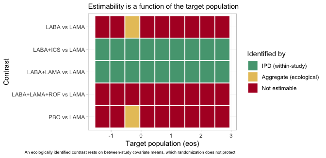
plot of chunk estimability-map
Three colors, three regimes. Two rows are green across the entire
axis: the headline contrast LABA+ICS versus
LAMA, and LABA+LAMA versus LAMA.
Both are identified by IPD, from within-study arm-by-covariate
variation, and are therefore identified in every target
population; that within-study variation is exactly what anchored STC and
MAIC consume. Two more rows, PBO versus LAMA
and LABA versus LAMA, are red everywhere
except at the single column that is MONO-2’s own
population, where they turn yellow. There, and nowhere else, the
aggregate LAMA trial identifies its own contrast, and
anything that can be built from it; and it does so
ecologically, from a between-study covariate mean
rather than from a within-study slope (Berlin et al. 2002). The
roflumilast row is red throughout, because ADD-2’s own
population does not lie on this axis. A one-column island of
estimability is what an aggregate two-arm trial buys you.
The same algebra reaches the component effects:
component_effects(fit, newdata = target)
#> component estimate se lower upper
#> 1 ICS NA NA NA NA
#> 2 LABA -0.1474449 0.1058796 -0.3378115 0.03994639
#> 3 LAMA NA NA NA NA
#> 4 ROF NA NA NA NALABA is identified. ICS, LAMA
and ROF individually are not; but the combination
the headline needs, LABA plus ICS minus
LAMA, is, because ADD-1 measured
LAMA against ICS with IPD. cpaic returns
NA for what it cannot identify rather than a prior-driven
number, which is the behavior you want from a tool that would otherwise
hand you the prior with a straight face (Wigle et al. 2026).
forest(fit, what = "component", newdata = target)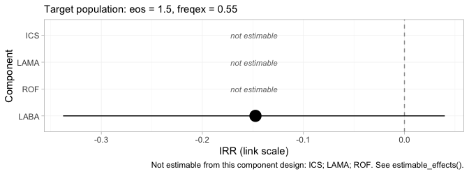
plot of chunk comp-forest
The component forest reports the same four numbers, on the log
rate-ratio scale, and it keeps the three it cannot compute,
drawn as labelled empty rows rather than dropped. A reader shown only
LABA would have no way of telling that three components had
been quietly removed; a reader shown three blanks knows exactly what the
network could not answer.
Results
Recovered against the truth
relative_effects(fit, reference = "LAMA", newdata = target)
#> Relative effects (IRR, back-transformed)
#> Target population: eos = 1.5, freqex = 0.55
#> treatment comparator estimate se lower upper pr_gt0
#> LABA LAMA NA NA NA NA NA
#> LABA+ICS LAMA 0.711 0.154 0.528 0.911 0.009
#> LABA+LAMA LAMA 0.868 0.106 0.713 1.041 0.054
#> LABA+LAMA+ROF LAMA NA NA NA NA NA
#> PBO LAMA NA NA NA NA NA
#> NA = not uniquely estimable from this component design (see estimable_effects()).
forest(fit, newdata = target, reference = "LAMA") +
theme(plot.caption = element_text(size = 6.5))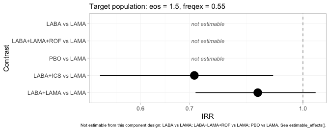
plot of chunk forest-bayes
The same table as a figure, and the refusals are now impossible to
miss: PBO, LABA and LABA+LAMA+ROF
versus LAMA are drawn as labelled empty rows. Set this
beside the frequentist forest from the previous section, which put a
point estimate and a confidence interval on all five. Same seven trials,
same additive component structure, same target population. The
difference is that one model knows which of its own answers this target
identifies and the other does not.
relative_effects(fit, reference = "LAMA", newdata = target_low)
#> Relative effects (IRR, back-transformed)
#> Target population: eos = -0.5, freqex = 0.2
#> treatment comparator estimate se lower upper pr_gt0
#> LABA LAMA NA NA NA NA NA
#> LABA+ICS LAMA 1.009 0.158 0.728 1.318 0.505
#> LABA+LAMA LAMA 0.882 0.097 0.731 1.050 0.064
#> LABA+LAMA+ROF LAMA NA NA NA NA NA
#> PBO LAMA NA NA NA NA NA
#> NA = not uniquely estimable from this component design (see estimable_effects()).The headline rate ratio moves from roughly 0.7 in the eosinophilic target to roughly 0.9 in the low-eosinophil one: the steroid earns its place in one population and barely in the other. Now put every method beside the planted truth.
grab <- function(tab, t1, ref, what = "estimate") {
as.numeric(tab[[what]][tab$treatment == t1 & tab$comparator == ref])
}
re_bayes <- relative_effects(fit, reference = "LAMA", newdata = target)
re_stc <- relative_effects(fit_stc, reference = "LAMA")
re_maic <- relative_effects(fit_maic, reference = "LAMA")
ci <- function(tab, t1) sprintf("(%.2f, %.2f)", grab(tab, t1, "LAMA", "lower"),
grab(tab, t1, "LAMA", "upper"))
covers <- function(tab, t1) {
tr <- exp(truth(t1, "LAMA", x_tgt))
ifelse(tr >= grab(tab, t1, "LAMA", "lower") &&
tr <= grab(tab, t1, "LAMA", "upper"), "yes", "NO")
}
recovery <- do.call(rbind, lapply(c("LABA+ICS", "LABA+LAMA"), function(t1) {
data.frame(
Contrast = paste(t1, "vs LAMA"),
True_RR = exp(truth(t1, "LAMA", x_tgt)),
cSTC = grab(re_stc, t1, "LAMA"),
`cSTC covers` = covers(re_stc, t1),
cMAIC = grab(re_maic, t1, "LAMA"),
`cML-NMR` = grab(re_bayes, t1, "LAMA"),
`cML-NMR 95% CrI` = ci(re_bayes, t1),
`cML-NMR covers` = covers(re_bayes, t1),
check.names = FALSE)
}))
knitr::kable(recovery, digits = 3, row.names = FALSE,
caption = "Rate ratios in the target population, against the truth")| Contrast | True_RR | cSTC | cSTC covers | cMAIC | cML-NMR | cML-NMR 95% CrI | cML-NMR covers |
|---|---|---|---|---|---|---|---|
| LABA+ICS vs LAMA | 0.676 | 0.790 | yes | 0.803 | 0.711 | (0.53, 0.91) | yes |
| LABA+LAMA vs LAMA | 0.877 | 0.873 | yes | 0.870 | 0.868 | (0.71, 1.04) | yes |
Three things to notice.
First, cstc() and cmaic() land on
essentially the same number, as the estimand table above predicted they
would: on a collapsible scale the two estimands nearly coincide.
Second, cmlnmr() sits closer to the truth than
either of them on the headline contrast. That is not luck. The
ADD-3 trial measured the same comparison as our IPD trial
ADD-1, but it is aggregate, so cstc() and
cmaic() cannot adjust it: it enters
cnma_bridge() at its own eosinophil level (around
260 cells), and ICS is strongly eosinophil-modified, so it
drags the pooled estimate toward the weaker effect that held in its
population. cmlnmr() has no such problem, because it
integrates every aggregate arm over that arm’s own covariate
distribution inside the likelihood. The two-stage route is
biased even on contrasts that are formally estimable, in
proportion to how much unadjusted aggregate evidence sits on the same
edge.
Third, the credible interval covers the truth. So, here, does the confidence interval; but it is aimed slightly off, and in a network with more aggregate evidence on that edge it would miss.
The whole set of pairwise answers, for completeness:
knitr::kable(league_table(fit, newdata = target),
caption = paste("League table in the target population: rate ratio of the row",
"treatment versus the column treatment, with its 95% credible",
"interval. Blank cells are not identified at this target."))| LABA | LABA+ICS | LABA+LAMA | LABA+LAMA+ROF | LAMA | PBO | |
|---|---|---|---|---|---|---|
| LABA | LABA | 0.87 (0.71, 1.04) | ||||
| LABA+ICS | LABA+ICS | 0.82 (0.66, 0.98) | 0.71 (0.53, 0.91) | |||
| LABA+LAMA | 1.23 (1.02, 1.51) | LABA+LAMA | 0.87 (0.71, 1.04) | |||
| LABA+LAMA+ROF | LABA+LAMA+ROF | |||||
| LAMA | 1.44 (1.10, 1.89) | 1.17 (0.96, 1.40) | LAMA | |||
| PBO | 1.17 (0.96, 1.40) | PBO |
A league table with holes in it. Only two blocks of cells carry
numbers: PBO against LABA, and the three-way
block among LAMA, LABA+ICS and
LABA+LAMA. Every blank cell is one whose contrast would
need the effect of LAMA, or of ROF, on its
own, and neither is pinned down at this target.
LABA+LAMA+ROF has an entirely empty row and an entirely
empty column: no other treatment in the network differs from it by a set
of components the design can resolve here. A conventional league table
would have printed all thirty numbers and told the reader nothing about
which twenty-two of them the design cannot identify at this target.
grid <- seq(-1, 3, by = 0.2)
curve <- do.call(rbind, lapply(grid, function(e) {
re <- relative_effects(fit, reference = "LAMA",
newdata = data.frame(eos = e, freqex = 0.55))
r <- re[re$treatment == "LABA+ICS", ]
data.frame(eos = e, est = r$estimate, lo = r$lower, hi = r$upper,
truth = exp(truth("LABA+ICS", "LAMA", c(eos = e, freqex = 0.55))))
}))
ggplot(curve, aes(200 + 100 * eos)) +
geom_ribbon(aes(ymin = lo, ymax = hi), alpha = 0.15) +
geom_line(aes(y = est, color = "cML-NMR posterior mean"), linewidth = 1) +
geom_line(aes(y = truth, color = "Truth"), linetype = "dashed",
linewidth = 1) +
geom_hline(yintercept = 1, color = "grey50") +
scale_y_log10() +
scale_color_manual(values = c("cML-NMR posterior mean" = "#2c7fb8",
"Truth" = "#d95f0e")) +
labs(x = expression("Blood eosinophils in the target population (cells /" ~ mu * "L)"),
y = "Rate ratio, LABA+ICS vs LAMA (log scale)", color = NULL,
title = "The steroid earns its place only in eosinophilic patients",
subtitle = "Frequent-exacerbator prevalence held at 55%; the contrast no trial measured") +
theme_minimal() + theme(legend.position = "top")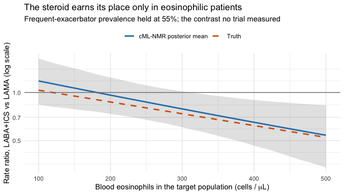
plot of chunk pop-curve
What the frequentist bridge does with the effects it cannot identify
cstc() and cmaic() adjust only the edges
where you hold IPD. Every aggregate edge enters
cnma_bridge() in its own trial’s
population, and the additive model then propagates that into
any contrast that leans on it, with no warning. Look at the contrasts
cmlnmr() refused to report:
cmp <- do.call(rbind, lapply(c("PBO", "LABA", "LABA+LAMA+ROF"), function(t1) {
data.frame(
Contrast = paste(t1, "vs LAMA"),
True_RR = exp(truth(t1, "LAMA", x_tgt)),
cSTC = grab(re_stc, t1, "LAMA"),
cMAIC = grab(re_maic, t1, "LAMA"),
`cML-NMR` = grab(re_bayes, t1, "LAMA"),
check.names = FALSE)
}))
knitr::kable(cmp, digits = 3, row.names = FALSE,
caption = "Rate ratios cML-NMR declines to report, and what the bridge prints anyway")| Contrast | True_RR | cSTC | cMAIC | cML-NMR |
|---|---|---|---|---|
| PBO vs LAMA | 1.370 | 1.264 | 1.264 | NA |
| LABA vs LAMA | 1.202 | 1.103 | 1.099 | NA |
| LABA+LAMA+ROF vs LAMA | 0.757 | 0.805 | 0.803 | NA |
The frequentist bridge prints a confident number for each of these,
and here those numbers are not far off. That is worth being
honest about, and it is worth understanding, because it is luck rather
than method: in this network the aggregate-only components happen to be
weakly effect-modified in the directions that matter
(Gamma_true["LAMA", "eos"] = 0.01, and roflumilast barely
interacts with anything), so evaluating their contrasts in the wrong
population costs little.
Change Gamma_true["LAMA", "eos"] to something
substantial and those cells would be badly wrong, with intervals that
exclude the truth; that is exactly what happens in
vignette("binary-outcomes"), where the aggregate-only
component is strongly effect-modified. You cannot know
which case you are in without fitting a model that can tell
you. The NA is not the tool being unhelpful; it is
the tool declining to pretend.
The hierarchy the network can support
Everyone wants the ranking. Wigle et al. (2026) set out a four-step workflow for
producing one honestly, and its third step is the one that bites here:
refine the ranked set to the elements that are actually
estimable, or decline to rank. cpaic performs that refinement
automatically. Because the outcome is a rate of exacerbations, fewer is
better, so every ranking call below is passed
lower_is_better = TRUE.
plot(cpaic_ranks(fit, newdata = target, lower_is_better = TRUE))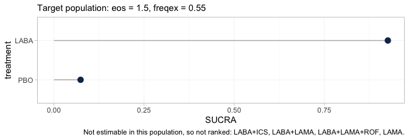
plot of chunk ranks-target
Step 3 is drastic in this network. Four of the six treatments leave
the hierarchy, and the caption names them. What survives is a
two-element comparison between placebo and LABA, which is
not a question anybody asked. The alternative was to rank all six, in
which case four of the six ranks would have been functions of the
interaction prior rather than of any trial, and the figure would have
looked complete.
The rankogram is stricter still, and it is worth seeing it refuse:
tryCatch(
plot(rank_probs(fit, newdata = target, lower_is_better = TRUE)),
error = function(e) cat(strwrap(conditionMessage(e), 76), sep = "\n"))
#> Fewer than two elements are estimable in this target population, so no
#> hierarchy can be formed. See estimable_effects_at().rank_probs() ranks the treatments other than
the reference, so, unlike cpaic_ranks(), it has no placebo
to fall back on; after Step 3 only LABA remains, and one
element is not a hierarchy. It therefore stops rather than draw one.
That refusal is the intended behavior and not a defect: a rankogram
computed from a prior-driven posterior is a picture of the prior, and it
is indistinguishable, to the eye, from a picture of evidence.
Move the target to MONO-2’s own population, the one
place on the eosinophil axis where the aggregate LAMA
evidence bites, and the hierarchy returns:
plot(rank_probs(fit, newdata = own, lower_is_better = TRUE))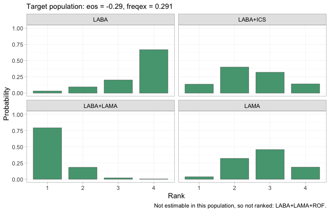
plot of chunk rankogram-own
Four treatments are now estimable and therefore ranked, each panel
giving the posterior probability that the treatment takes each rank,
with rank 1 the fewest exacerbations. The dual bronchodilator
LABA+LAMA takes first place with high probability, and
LABA alone is most likely to come last, which is what one
would expect of the weakest active regimen in a low-eosinophil
population where the steroid has little to offer.
LABA+LAMA+ROF is still absent, because nothing identifies
roflumilast in this population either. The point is not that
MONO-2’s population is a better one to decide in; it is
that the hierarchy, exactly like the estimable set and the relative
effects themselves, is a property of the target population and not of
the network.
The rank curve is designed to show that dependence directly, tracing each element’s SUCRA as the target moves:
plot_rank_curve(fit, em = "eos", values = seq(-1, 3, by = 0.5),
at = c(freqex = 0.55), lower_is_better = TRUE) +
theme(plot.subtitle = element_text(size = 7.5))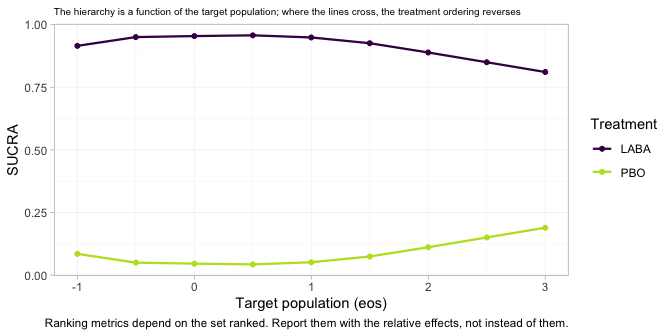
plot of chunk rank-curve
Two lines, a wide gap apart, that never come close to crossing, and
it would be a serious misreading to take that as reassurance. The plot’s
own subtitle offers to show you where the ordering reverses, and nothing
reverses; but the reason is not that the hierarchy is stable. It is that
at every target on this axis Step 3 leaves the same two-element
set, placebo and LABA, and a two-element hierarchy
contains nothing that could cross. What the curve actually traces is the
posterior probability that LABA beats placebo. A rank curve
that refuses to move means something only once the estimability map
beside it has confirmed that there was more than one thing there to
move. The figure this one is failing to be is a set of curves that
cross; the failure is a property of the evidence, not of the plot.
Random effects and model comparison
tau is the study-arm heterogeneity around the
component-implied effects. With seven contrasts and four components
there are three degrees of freedom for it, so it is informed, but not
richly.
knitr::kable(fit$fit$summary("tau")[, c("variable", "mean", "sd", "q5", "q95",
"rhat", "ess_bulk")], digits = 3)| variable | mean | sd | q5 | q95 | rhat | ess_bulk |
|---|---|---|---|---|---|---|
| tau[1] | 0.082 | 0.094 | 0.006 | 0.25 | 1.015 | 396.395 |
Compare against a fixed-effect fit by leave-one-out cross-validation (Vehtari et al. 2017) and DIC (Spiegelhalter et al. 2002):
fit_fixed <- cmlnmr(ipd, agd, effect_modifiers = ems, inactive = "PBO",
family = "poisson", exposure = ".exposure",
trt_effects = "fixed",
chains = 4, iter_warmup = 500, iter_sampling = 500,
n_int = 64, seed = 3, show_exceptions = FALSE)
loo::loo_compare(list(random = loo::loo(fit), fixed = loo::loo(fit_fixed)))
#> model elpd_diff se_diff p_worse diag_diff diag_elpd
#> fixed 0.0 0.0 NA 4 k_psis > 0.7
#> random -1.1 0.7 0.94 |elpd_diff| < 4 8 k_psis > 0.7
knitr::kable(data.frame(
model = c("random", "fixed"),
DIC = c(dic(fit)$dic, dic(fit_fixed)$dic),
p_eff = c(dic(fit)$p_eff, dic(fit_fixed)$p_eff)),
digits = 1, caption = "Deviance information criterion")| model | DIC | p_eff |
|---|---|---|
| random | 6244.1 | 20.4 |
| fixed | 6241.0 | 17.3 |
Two cautions on the LOO comparison. First, its Pareto- diagnostic flags several observations, and it is right to: each aggregate arm is a single “observation” carrying an entire trial’s worth of information, so leaving one out is a large perturbation and the importance-sampling approximation strains. Read LOO here as indicative, alongside DIC. Second, neither criterion tests the assumption that bridges the gap.
Two dic() objects passed to plot() give the
dev-dev plot, which compares the models point by point instead of in
aggregate:
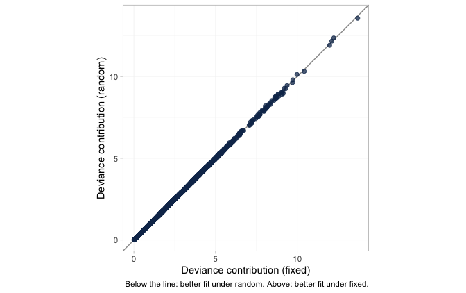
plot of chunk devdev
Each dot is one data point’s posterior mean deviance under the
fixed-effect model against its deviance under the random-effects model;
below the line of equality the random-effects model fits it better,
above it the fixed-effect model does. Nothing is below the line and
nothing is above it. All 2410 points, the 2400 individual patients in
the dense lower-left mass and the 10 aggregate arms trailing out to the
upper right, are fitted identically by the two models. That is the DIC
and LOO comparison drawn point by point rather than summed:
tau is small enough that permitting study-arm heterogeneity
changes no individual fit, which is why neither criterion can separate
the models and why the choice between them here has to be made on
grounds other than fit.
plot_leverage() asks which data points are buying that
fit, plotting each point’s leverage (its contribution to the effective
number of parameters) against its signed square root residual deviance,
with contours of constant DIC contribution:
plot_leverage(fit)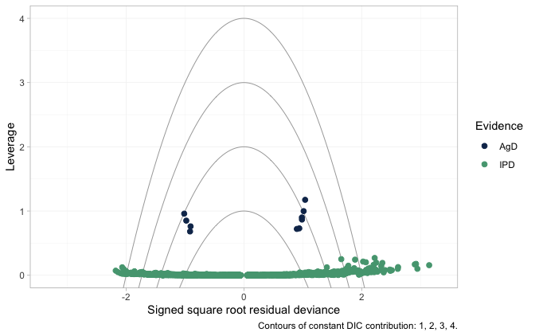
plot of chunk leverage
An individual patient carries almost no leverage, so the IPD lie in a
flat band along the bottom. Their residual deviances fan out to either
side, and a few sit beyond the outermost contour; that is expected
rather than alarming, because a single Poisson count has irreducible
deviance and no model fits one patient exactly. The contours are
calibrated for arm-level points, and there the reading is clean: the
aggregate arms sit an order of magnitude higher, at a leverage near one
apiece, each being an entire trial compressed into a single count, and
every one of them falls inside the DIC = 3 contour. No
aggregate arm is spoiling the fit. (This plot needs a saturated model to
measure residual deviance against. Poisson counts have one; censored
survival times do not, which is why a survival model cannot be given a
leverage plot at all.)
The frequentist bridge offers a Cochran
.
Read Q.diff, not Q: only the former tests the
additivity restrictions, and on a disconnected network it does not exist
at all, because there is no standard NMA to nest the additive model
inside.
additivity_test(fit_stc)
#> Additive component model: fit statistics
#> Total lack of fit (Q.additive): Q = 9.772, df = 3, p = 0.0206
#> Additivity restrictions (Q.diff): not available; no standard NMA
#> is estimable on a disconnected network.
#> Note: neither statistic tests whether component effects are constant
#> ACROSS sub-networks, which is the assumption that bridges the gap.
#> That assumption is untestable from the data and must be justified
#> clinically.The total lack of fit Q.additive is
nevertheless large here. Because we planted the truth, we know exactly
why, and it is not a failure of additivity: the additive model is
exactly right by construction. It is that the contrasts being pooled are
not all in the same population. The aggregate edges
enter at their own covariate means, the adjusted IPD edges at the
target, the components are effect-modified, and so no single vector of
component effects can fit them all.
is picking up the population heterogeneity that the two-stage route is
ignoring. It cannot tell you that is the cause, but when you see it,
this is a possibility to rule in or out before you blame additivity.
Prior sensitivity
A contrast that moves when you change a prior it should not depend on
was never data-driven. prior_sensitivity() refits under a
tighter and a looser interaction prior. It deliberately reports movement
for the non-estimable contrasts too, bypassing the
NA mask, so that you can see the mechanism instead of
taking it on trust.
ps <- prior_sensitivity(fit, newdata = target, reference = "LAMA",
prior = "gamma", tighter = 0.5, looser = 2,
chains = 2, iter_warmup = 250, iter_sampling = 250)
ps
#> cML-NMR prior sensitivity: gamma prior
#> treatment comparator estimate tighter looser move_tighter move_looser max_movement estimable
#> LABA LAMA 0.130 0.120 0.152 0.010 0.023 0.023 FALSE
#> LABA+ICS LAMA -0.353 -0.328 -0.335 0.025 0.018 0.025 TRUE
#> LABA+LAMA LAMA -0.147 -0.138 -0.141 0.010 0.007 0.010 TRUE
#> LABA+LAMA+ROF LAMA -0.742 -0.380 -1.967 0.362 1.225 1.225 FALSE
#> PBO LAMA 0.277 0.258 0.293 0.020 0.016 0.020 FALSERead max_movement against estimable. The
estimable contrasts barely move. The non-estimable ones move with the
prior, and LABA+LAMA+ROF moves enormously:
doubling the interaction prior’s scale swings its posterior mean by more
than a log unit, because roflumilast’s interactions are informed by
nothing except that prior. That is what “not identified” means. No
likelihood ridge holds it in place, and yet the posterior looks
perfectly healthy while the prior fills the vacuum.
plot_prior_posterior(fit, prior = "gamma") reaches the
same verdict for the cost of no refit at all, by overlaying each
interaction’s posterior on the normal(0, 1) prior it was handed:
plot_prior_posterior(fit, prior = "gamma")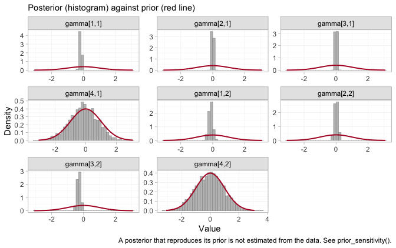
plot of chunk prior-posterior-gamma
Recall the indexing: components in the order ICS,
LABA, LAMA, ROF, modifiers in the
order eos, freqex. Two panels are unlike the
rest, and they are gamma[4,1] and gamma[4,2]:
roflumilast’s interactions with each modifier reproduce the normal(0, 1)
prior almost exactly. Nothing in seven trials touched them, which is why
doubling that prior’s scale swings LABA+LAMA+ROF by more
than a log unit in the table above. A well-mixed chain sampling a prior
is still sampling a prior, and no convergence diagnostic will ever say
otherwise.
The other six interactions are pulled well inside their prior, and
that deserves a word, because it is not the same statement as
“estimable”. ICS and LAMA have tightly
determined interactions here, and cpaic still reports their contrasts as
NA. The two are consistent. Each of those components
appears in an arm of an IPD trial, so the within-arm covariate slopes do
constrain it, but only by borrowing the prognostic surface
breg from MONO-1 to interpret
ADD-1, which is to say only by assuming that the prognostic
effects are the same in both trials. The criterion behind
estimable_effects_at() is built from within-study arm
contrasts, in which that surface cancels, so it never leans on the
assumption and never claims the identification it would buy. The two
diagnostics ask different questions: plot_prior_posterior()
asks what the likelihood touched, and
estimable_effects_at() asks what the design proves without
extra assumptions. Roflumilast fails both. ICS and
LAMA fail only the second, and it is on the strength of
that failure, not of a wide posterior, that they are returned as
NA.
Notice that this is true even though those same contrasts came out fairly close to the truth in the table above. Being right by luck and being identified are different properties, and only one of them is a reason to believe a number.
What to take away
| Adjusts the population | Bridges the gap | Reports non-identified effects | |
|---|---|---|---|
| Standard NMA | no | no | not at all; they lie outside the model |
| ML-NMR | yes | no | yes, as prior-driven numbers |
cstc() / cmaic() +
cnma_bridge()
|
IPD edges only | yes | yes, silently |
cmlnmr() |
yes, all edges | yes | no: returns NA
|
-
Rates need an offset, and the log link needs
integration. Person-time enters as
log(exposure); the aggregate likelihood is the individual model averaged over the study’s covariate distribution on the rate scale, never evaluated at the covariate mean. -
Collapsibility is a property of the link. On the
rate-ratio scale
cstc()andcmaic()target nearly the same thing and land nearly together. On the odds-ratio scale they do not. Do not carry an intuition from one to the other. - More effect modifiers means fewer estimable effects, for aggregate-only components. Each aggregate two-arm trial gives one equation; the estimand has unknowns per contrast direction. IPD is what breaks the tie, which is the whole reason population adjustment needs it.
Three honest limitations.
The bridging assumption is untestable. Reconnecting through shared components requires the component effects and their interactions with the effect modifiers to be equal in both sub-networks. There is, by construction, no cross-gap evidence with which to test that: neither
Q, norQ.diff, nor LOO can see it. It must be defended clinically (Veroniki et al. 2026).A component effect identified only by aggregate data is identified ecologically. Where the estimability table says
identified_by = "aggregate", the interaction is being read off a gradient across study means. Randomization holds within a trial; it does not randomize covariate means across trials, so that gradient is confounded in a way a within-trial slope is not (Berlin et al. 2002). cpaic reports the distinction rather than burying it.-
The Poisson likelihood assumes the conditional mean equals the conditional variance. Exacerbation counts are routinely overdispersed in reality (they cluster within patients), and a Poisson model then reports intervals that are too narrow. cpaic’s count family is Poisson. If the IPD show clear overdispersion, treat the intervals as a lower bound on uncertainty and add prognostic covariates that absorb the extra variation; the rate-ratio point estimates stay consistent, the uncertainty does not.
A crude check helps, but read it carefully: the raw variance-to-mean ratio exceeds 1 even for perfectly Poisson data whenever patients differ in rate or in follow-up length, which they do here by construction. It is a screen, not a test.
od <- do.call(rbind, lapply(split(ipd, ipd$.study), function(d) data.frame(
Study = d$.study[1], mean_count = mean(d$.y), var_count = var(d$.y),
raw_ratio = var(d$.y) / mean(d$.y),
# residual ratio, after conditioning on the covariates and the offset
residual_ratio = {
m <- glm(.y ~ .trt + eos + freqex + offset(log(.exposure)),
family = poisson, data = d)
sum(residuals(m, type = "pearson")^2) / m$df.residual
})))
knitr::kable(od, digits = 2, row.names = FALSE,
caption = "Overdispersion screen. The residual ratio is the one to read; near 1 is Poisson-like.")| Study | mean_count | var_count | raw_ratio | residual_ratio |
|---|---|---|---|---|
| ADD-1 | 0.93 | 1.04 | 1.12 | 0.99 |
| MONO-1 | 1.16 | 1.49 | 1.29 | 1.02 |